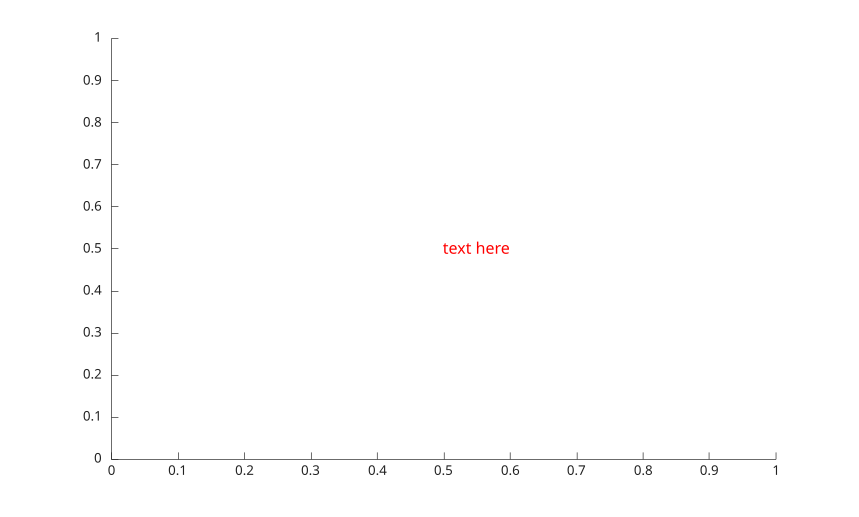
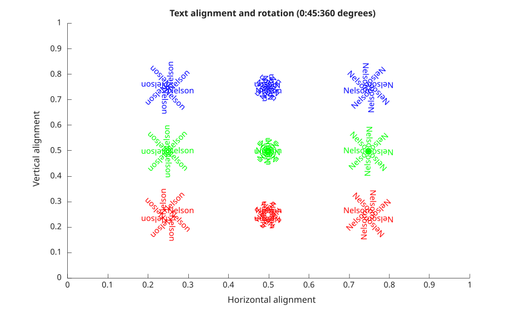

text(x, y, txt)
text(x, y, z, txt)
text(... , propertyName, propertyValue)
text(propertyName, propertyValue)
text(ax, ...)
go = text(...)
| Parameter | Description |
|---|---|
| x | x-coordinates: vector or matrix. |
| y | y-coordinates: vector or matrix. |
| z | z-coordinates: vector or matrix. |
| parent | a scalar graphics object value: parent container, specified as a axes. |
| text | Text to display: character vector, string scalar, string array or cell array. |
| propertyName | a scalar string or row vector character. |
| propertyValue | a value. |
| Parameter | Description |
|---|---|
| go | a graphics object: text type. |
figure creates figure.
See text properties for the complete property list.
The Interpreter property selects how the String is parsed: 'tex' (default) renders a subset of TeX markup (the special characters below, plus ^{ } superscripts and _{ } subscripts); 'none' draws the text verbatim.
The 'latex' value is accepted, but a full LaTeX math layout engine (\frac, \sqrt, \int with limits, matrices, and so on) is not yet implemented. It falls back to the 'tex' pipeline after removing a surrounding pair of $...$ math delimiters, so known symbols and super/subscripts are rendered while unsupported constructs appear as their source text. A full LaTeX interpreter is planned for a future release.
lists of the supported special characters for the 'tex' interpreter:
Superscript: ^{ } 'text^{superscript}'
Subscript: _{ } 'text_{subscript}'
| Character Sequence | Symbol |
|---|---|
| \alpha | α |
| \upsilon | υ |
| \sim | ~ |
| \angle | ∠ |
| \phi | ϕ |
| \leq | ≤ |
| \ast | * |
| \chi | χ |
| \infty | ∞ |
| \beta | β |
| \psi | ψ |
| \clubsuit | ♣ |
| \gamma | γ |
| \omega | ω |
| \diamondsuit | ♦ |
| \delta | δ |
| \Gamma | Γ |
| \heartsuit | ♥ |
| \epsilon | ϵ |
| \Delta | Δ |
| \spadesuit | ♠ |
| \zeta | ζ |
| \Theta | Θ |
| \leftrightarrow | ↔ |
| \eta | η |
| \Lambda | Λ |
| \leftarrow | ← |
| \theta | θ |
| \Xi | Ξ |
| \Leftarrow | ⇐ |
| \vartheta | ϑ |
| \Pi | Π |
| \uparrow | ↑ |
| \iota | ι |
| \Sigma | Σ |
| \rightarrow | -> |
| \kappa | κ |
| \Upsilon | ϒ |
| \Rightarrow | ⇒ |
| \lambda | λ |
| \Phi | Φ |
| \downarrow | ↓ |
| \mu | µ |
| \Psi | Ψ |
| \circ | º |
| \nu | ν |
| \Omega | Ω |
| \pm | ± |
| \xi | ξ |
| \forall | ∀ |
| \geq | ≥ |
| \pi | π |
| \exists | ∃ |
| \propto | ∝ |
| \rho | ρ |
| \ni | ∍ |
| \partial | ∂ |
| \sigma | σ |
| \cong | ≅ |
| \bullet | • |
| \varsigma | ς |
| \approx | ≈ |
| \div | ÷ |
| \tau | τ |
| \Re | ℜ |
| \neq | ≠ |
| \equiv | ≡ |
| \oplus | ⊕ |
| \aleph | ℵ |
| \Im | ℑ |
| \cup | ∪ |
| \wp | ℘ |
| \otimes | ⊗ |
| \subseteq | ⊆ |
| \oslash | ∅ |
| \cap | ∩ |
| \in | ∈ |
| \supseteq | ⊇ |
| \supset | ⊃ |
| \lceil | ⌈ |
| \subset | ⊂ |
| \int | ∫ |
| \cdot | · |
| \o | ο |
| \rfloor | ⌋ |
| \neg | ¬ |
| \nabla | ∇ |
| \lfloor | ⌊ |
| \times | x |
| \ldots | ... |
| \perp | ⊥ |
| \surd | √ |
| \prime | ´ |
| \wedge | ∧ |
| \varpi | ϖ |
| \0 | ∅ |
| \rceil | ⌉ |
| \rangle | 〉 |
| \mid | | |
| \vee | ∨ |
| \langle | 〈 |
| \copyright | © |
f = figure(1)
t = text(0.5, 0.5, 'text here');
s = t.FontSize;
t.FontSize = 12;
t.Color = 'red';
figure();
ha = {'left', 'center', 'right'};
va = {'bottom', 'middle', 'top'};
color = {'red', 'green', 'blue'};
x = [0.25 0.5 0.75];
y = x;
for t = 0:45:359;
for nh = 1:numel (ha)
for nv = 1:numel (va)
text (x(nh), y(nv), 'Nelson', ...
'Rotation', t, ...
'HorizontalAlignment', ha{nh}, ...
'VerticalAlignment', va{nv}, ...
'Color', color{nv});
end
end
end
axis([0 1 0 1]);
title ('Text alignment and rotation (0:45:360 degrees)');
xlabel('Horizontal alignment');
ylabel ('Vertical alignment');
figure();
h1 = text(0.5, 0.5, 'Nelson \copyright')
h1.String
% Nelson is full unicode, so
h2 = text(0.5, 0.3, 'OR Nelson ©')
h2.String| Version | Description |
|---|---|
| 1.0.0 | initial version |
| 1.7.0 | CreateFcn, DeleteFcn callback added. |
| -- | BeingDeleted property added. |